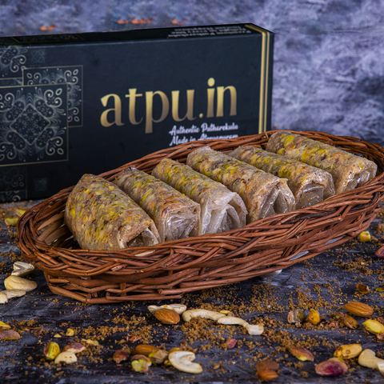

Godavari
Foods
Welcome to Konaseema Specials
Konaseema cuisine is a celebration of fresh, locally sourced ingredients, including fragrant rice, freshly caught seafood, and tropical coconuts. From the tangy and spicy Pulasa Pulusu to the creamy and flavorful Coconut Rice, every dish tells a story of tradition and love. Dive into the taste of Konaseema and experience a feast for your senses like never before!
|
|
|
| Awesome Taste |
Awesome Ingredients |
Konaseema’s culinary landscape is a vibrant mix of sweet, savory, and flavorful delights that truly represent the heart of Andhra cuisine. From traditional sweets like Pootharekulu and Ariselu to aromatic seafood biryanis infused with local spices, every dish showcases the richness of the region’s heritage. Refreshing drinks like tender coconut water also be good
Konaseema Sweets
Konaseema’s sweets are a harmonious blend of tradition and indulgence. Delicacies like Kova, made from simmered milk, offer a rich and creamy treat, while Kaja, with its golden, flaky layers soaked in sugar syrup, is a festive favorite. These sweets are crafted with precision, embodying the love and care of homemade recipes passed down for generations. Whether celebrating festivals or sharing joy with loved ones, Konaseema’s sweets add a touch of sweetness to every occasion.
|
|
|

|

|
| Tapeswaram Kaja |
Konaseema Kova |
Jaggery Laddu |
Pootharekulu |
Indulge in the sweet traditions of Konaseema, where timeless recipes meet decadent delights. Rich treats like Kova, crafted from slow-simmered milk, offer a creamy indulgence. Kaja, with its delicate, sugar-soaked layers, shines as a festive showstopper. These artisanal sweets embody love and tradition, with each bite telling a story of generations past. Whether celebrating life's milestones or sharing moments with loved ones, Konaseema's sweets add a touch of warmth and joy to every occasion.
Flavors of Biryanis
The biryanis of Konaseema are a culinary marvel, each offering a unique take on this timeless dish. Bamboo Biryani, cooked inside bamboo shoots, infuses the rice and meat with an earthy aroma, creating a flavor like no other. Dum Biryani, on the other hand, is slow-cooked to perfection, with the steam sealing in the spices and juices, resulting in a rich and aromatic feast. These biryanis are not just food but an experience that reflects the region’s culinary artistry.
|
|
|
|
|
| Dum Biryani |
Pot Biryani |
Bamboo Biryani |
Mughlai Biryani |
Konaseema's biryanis are a gastronomic wonder, showcasing diverse interpretations of this beloved dish. Bamboo Biryani, cooked within bamboo shoots, imparts a distinctive earthy flavor to the rice and meat. In contrast, Dum Biryani is slow-cooked to perfection, with the steam sealing in the spices and juices, resulting in a rich, aromatic culinary experience. These biryanis transcend mere cuisine, reflecting the region's rich culinary heritage and artistry.
Pickle Paradise
Pickles in Konaseema are an explosion of flavors, combining the region’s love for spice and tang. Mango Pickle, made from raw, tangy mangoes and a medley of spices, is a pantry staple in every household. For meat lovers, Chicken Pickle and Prawn Pickle bring a bold and zesty twist, preserving the tender pieces of meat or seafood in rich, spiced oil. These pickles are a perfect accompaniment to any meal, elevating even the simplest dishes.
|
|
|
|
|
| Mango Pickle |
prawn pickle |
Chicken Pickle |
Mutton Pickle |
Konaseema's pickles are a symphony of flavors, masterfully blending spice, tang, and love. The region's iconic Mango Pickle, crafted with raw mangoes and a secret blend of spices, is a treasured staple in every home. For those who crave bold flavors, Chicken Pickle and Prawn Pickle offer a thrilling twist, with tender meat and seafood preserved in rich, aromatic oils. These artisanal pickles elevate any meal, transforming simple dishes into unforgettable culinary experiences.
Drink Fiesta
Konaseema’s beverages are a refreshing escape, ideal for quenching thirst and uplifting the mood. Badam Milk, enriched with almonds and saffron, offers a creamy and nourishing experience, while Rose Milk, with its fragrant floral essence, is a soothing delight. For a fizzy and nostalgic touch, Goli Soda, the iconic carbonated drink in glass bottles, is a favorite among all age groups, making it a cherished part of the local food culture.
|
|
|
|
|
| Badham Milk |
Rose Milk |
Artos |
Goli Soda |
Konaseema's beverages are a revitalizing oasis, perfectly crafted to quench thirst and uplift spirits. Rich and creamy Badam Milk, infused with the luxury of almonds and saffron, nourishes both body and soul. Meanwhile, fragrant Rose Milk, with its delicate floral essence, is a soothing balm for the senses. For a burst of nostalgia and fizz, Goli Soda, the beloved glass-bottled soda, is a timeless favorite across generations, weaving itself into the fabric of local food traditions.
Crispy Cravings
The snack culture of Konaseema is a celebration of crunchy and savory delights. Boondi, made from chickpea flour, is light and crispy, perfect for munching on its own or adding to chaats. Vamu Posa, spiced with carom seeds, is another popular snack with a unique flavor that pairs well with evening tea. These mixtures are simple yet irresistible, offering a taste of everyday joy and comfort.
|
|
|
|
|
| Andhra Mixture |
Special Chegodi |
Ribbon Pakoda |
Vampusa |
Konaseema's snack culture is a vibrant celebration of crunchy textures and savory flavors. Crispy Boondi, crafted from chickpea flour, is a delightfully light bite, perfect for snacking on its own or elevating chaats. Vamu Posa, infused with the warmth of carom seeds, offers a distinct flavor profile that pairs beautifully with evening tea. These humble snacks embody the essence of everyday joy, providing comfort and satisfaction in every bite.
Copyright © 2024 Godavari Foods
All rights reserved
Developed and Maintained by
LokeshChappidi